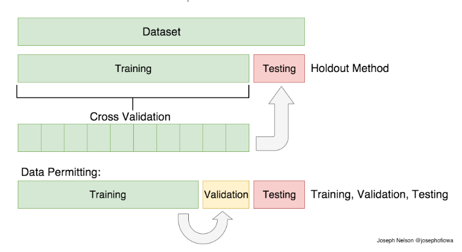
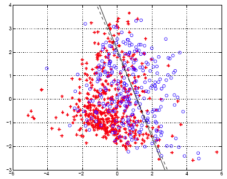

<body>

  <!-- Navigation -->
  

  <!-- Page Content -->
  <div class="container">

    <div class="row">

      <!-- Post Content Column -->
      <div class="col-lg-8">

        <!-- Title -->
        <h1 class="mt-4">Dataset Analysis & Machine Learning </h1>

        <h2 class="mt-4">Diabetes prediction </h2>
        <h3 class="mt-4">Introduction </h3>

        <!-- Author -->
        <p class="lead">
          Diabetes is considered as one of the deadliest and chronic diseases. Our project aims to predict diabetes based on many factors(features), like: age, family history, blood pressure, ... etc. 
          You can check and download our dataset <a href="https://www.kaggle.com/edubrq/diabetes">here</a>.
        </p>
         
         <h3 class="mt-4">Data Analysis </h3>

         <p class="lead">
          By looking into our dataset, we found that we have some missing data, so we solved this by replacing these missing values in each attribute with the mean value of the data of this attribute.
          
           <table style="width:100%"; align="center"; border= 1px solid black">

  <tr>
    <td> </td>
    <th>Pregnancies</th>
    <th>Glucose</th> 
    <th>Blood Pressure </th>
    <th>Skin Thickness </th>
    <th>Insulin </th>
    <th>BMI </th>
    <th>Diabetes Pedigree Function </th>
    <th>Age </th>
  </tr>
  <tr>
    <th>Mean</th>
    <td>13.38</td> 
    <td>121.86</td>
    <td>72.75 </td>
    <td>26.6 </td>
    <td>118.66 </td>
    <td>32.45 </td>
    <td>0.74 </td>
    <td>33.24 </td>
  </tr>

</table>
        </p>
        </p>

         <h3 class="mt-4">Methods </h3>

         <p class="lead">
         When model is divided into train and validation, it means that the training part wasn't considered in the validation part, and similarly the validation part wasn't considered in the training part.
         That's why we used the cross-validation, so that the whole data will be considered in both training and validation. See following diagram show more explanation.[<a href="https://www.kaggle.com/shrutimechlearn/step-by-step-diabetes-classification-knn-detailed?fbclid=IwAR36cCUBqicQlEJy_f8eKcNljb1GO1CKwIM5h0pEGa_ZozAgs7ySI6-Ol2k">Source</a>]
         <hr>
        <!-- Preview Image -->
        

        <hr>
        
         <br> We used 2 methods: Linear Discriminant Analysis and K Nearest Neighbors, for prediction.
        
         <h4 class="mt-4">Linear Discriminant & Logistic Regression</h4>
         <a href="https://newonlinecourses.science.psu.edu/onlinecourses/sites/stat508/files/lesson09/image_01.gif">Source</a>
          <hr>
        <!-- Preview Image -->
        

        <hr>

        <h4 class="mt-4">K Nearest Neighbors </h4>
        <a href="https://www.researchgate.net/profile/Zainab_Sultani/publication/328146770/figure/fig3/AS:679495715536897@1539015811173/kNN-classification-example.ppm">Source</a>
        <hr>
        <!-- Preview Image -->
        

        <hr>

          <h3 class="mt-4">Here are the results: </h3>

          <table style="width:110%"; align="center"; border= 1px solid black">

  <tr>
   <td> </td>
    <th>Linear Discriminant Analysis</th>
    <th>K Nearest Neighbors Classifier</th> 
  </tr>
  <tr>
    <th>Accuracy</th>
    <td>0.7708</td> 
    <td>0.77</td>
  </tr>
  <tr>
    <th>Sensitivity</th>
    <td>0.5672</td> 
    <td>0.92</td>
  </tr>
  <tr>
    <th>Specificity</th>
    <td>0.88</td> 
    <td>0.49</td>
  </tr>
  <th>P-value(CI 95%)</th>
    <td>0.0000339</td> 
    <td>0.0005</td>
   </tr>
</table>
        </p>

  <!-- Footer -->
  <footer class="py-5 bg-dark">
    <div class="container">
      <p class="m-0 text-center text-white">Copyright &copy; Your Website 2019</p>
    </div>
    <!-- /.container -->
  </footer>

  <!-- Bootstrap core JavaScript -->
  <script src="vendor/jquery/jquery.min.js"></script>
  <script src="vendor/bootstrap/js/bootstrap.bundle.min.js"></script>

</body>